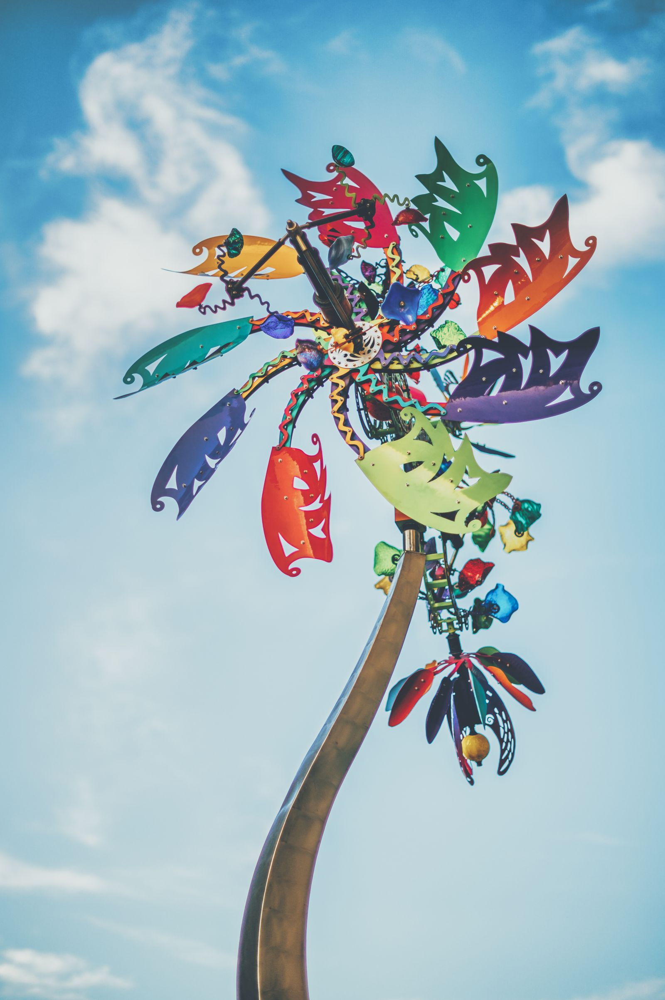

About
A clockmaker’s grandson who went outside
I trained as an instrument maker in Utrecht and spent six years restoring tower clocks and carillon mechanisms across the Netherlands — work that teaches you two things: that a mechanism outdoors is a negotiation with weather, and that the public trusts a thing that keeps honest time. In 2009 I built my first pendulum field for a school playground in Delft, out of scaffold tube and stubbornness, and watched a playground’s worth of children go quiet at the half-cycle, when the rail turns to chaos before it re-phases. I have been building versions of that quiet ever since.
The studio is small on purpose: me, one fabricator, one part-time engineer who checks the footing calculations I am not licensed to sign. Twenty-three pieces stand in squares, gardens and school grounds. Two have been storm-damaged and repaired, and their file is on the Projects page at the same length as the successes, because a client choosing work that must live outdoors for thirty years is entitled to the whole record.
My opinion, stated once and applied everywhere on this site: most kinetic sculpture fails politely — installed in air too still to move it, photographed once on a windy day, and still forever after. The survey exists to refuse that outcome before it is paid for. A piece of mine that hangs motionless in a sheltered courtyard is not a subtle piece. It is a wrong one.

How a piece runs — the working page
| Stage | What happens | What the client receives |
|---|---|---|
| 1 | Site wind survey. Twelve months of the nearest station record, checked against a season of the studio’s anemometer at the piece’s height on the site. | The survey in writing: mean and gust figures, calm hours, and one of three verdicts — build as asked, build differently, or do not build. |
| 2 | Design. The piece is drawn against the survey: periods and lengths from the printed relation, class and rating from Table W1, foundations sized to the ground. | Drawings, the field plate, and a fixed price built from the printed rates — the estimator’s shape, made exact. |
| 3 | Fabrication. Rods cut to the table, bearings sealed, blades balanced on the bench rig and run for a week indoors before anything travels. | Bench photographs and the run-in log, with the piece’s serial number stamped on both. |
| 4 | Installation. Footings, erection, first release in the client’s presence, and the pinning or parking drill taught to the site’s own staff. | The handover file: as-built plate, drill card, inspection dates for the first five years. |
| 5 | First inspection. At the class interval — 12 or 24 months — the studio returns, measures bearing play against the printed limits, and files the report either way. | The inspection report, included in the commission price. Later inspections are booked from the register. |
The honesty page
Weather truth. Every piece is sold under a printed wind class with a printed behaviour beyond it. Storms are not acts of God in this practice; they are load cases with names and dates, and two of them are in the record.
No perpetual motion. Nothing on this site runs forever. A pendulum field is released by hand or by its lift and swings until friction and still air finish the argument; a rotor turns when the wind turns it. Where a panel appears on a piece, it lifts a release weight — the sun doing a hand’s job, once per cycle — and that is the whole of what “solar-assisted” means here. Any artist who implies more is selling you the implication.
Maintenance is part of the sale. Bearings are consumables with printed lives; inspections are dated at handover, not remembered later. A buyer who does not want the inspection schedule should not buy the piece, and the studio will say so before the deposit, not after.
Refusals are work. Four commissions have been refused for still air. Each refusal was delivered in writing with its data, and one of them is Case File 03. The studio would rather sell a survey than a statue that stands still.
Engagement terms — the shape of them
| Survey | €1,200, payable before instruments go up; deducted in full from any commission over €25,000. The survey is the client’s document, usable with any artist. |
| Deposit & stages | 40% on design approval, 40% on fabrication completion, 20% at first release. The piece is not installed before the footing certificate is signed by the client’s engineer. |
| Weather damage | Damage inside the printed rating, with inspections current, is repaired at shared cost as the contract states. Damage connected to a studio note that was not acted on is the studio’s cost — see Case File 02. |
| Inspections | First inspection included. Later inspections at the register rate current at booking; a lapsed inspection pauses the weather-damage terms until it is done. |
| Bearings | Printed life per class; measured play past the printed limit triggers replacement at the next visit, charged at parts plus the visit. |
| Removal | Any piece can be de-installed by the studio at the register rate. Footings are broken out and the ground made good — a site should not keep a scar as a souvenir. |
The terms are short because the numbers are printed.
Bring a site. The survey will say what it can carry.